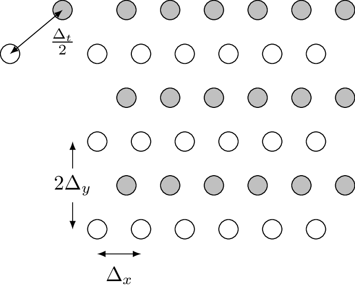

\documentclass{standalone}
\usepackage{tikz}
\usetikzlibrary{positioning, calc}
\begin{document}
\begin{tikzpicture}[align=center,node distance=0.5cm]
\tikzset{
darkstyle/.style={circle,draw,fill=gray!40,minimum size=20},
filled/.style={circle,draw,fill=gray!60, minimum size=5},
white/.style={circle,draw, minimum size=5,,xshift=-0.5cm},
}
% number of vertices
\def \n {5}
\def \xshift{2cm}
\foreach \x in {0,...,\n}
{ \foreach \y in {0,...,\n}
{ \pgfmathtruncatemacro{\nodelabel}{\x+\y*6+1}
%\pgfmathtruncatemacro{\row}{Mod(\x,2)}
\pgfmathparse{Mod(\y,2)==0?1:0}
\ifnum\pgfmathresult>0
\node[filled] (\nodelabel) at (0.75*\x,-0.75*\y) {};
\else
\node[white] (\nodelabel) at (0.75*\x,-0.75*\y) {};
\fi
}
}
% \draw[latex-latex] (19.west) -- ++ (25.west) node[midway]{label};
\draw [latex-latex] ($(19.west) + (-0.25cm, 0)$) -- ($(31.west) + (-0.25cm, 0)$) node[midway, fill=white]{$2\Delta_y$};
\draw [latex-latex] ($(31.south) + (0cm, -0.25cm)$) -- ($(32.south) + (0cm, -0.25cm)$) node[midway, below, yshift=-0.1cm, fill=white]{$\Delta_x$};
% Add nodes for ts
% \draw[latex-latex] ($(7.south) + (-0.25cm, -0.25cm)$) -- ($(1.south) + (-0.25cm, -0.25cm)$) node[midway, below, yshift=-0.1cm, fill=white]{$\Delta_x$};
\node[filled, left = of 1, xshift =-0.25cm] (aa) {};
\node[white, left = of 7, xshift =-0.15cm] (ab) {};
\draw [latex-latex] ($(ab) + (0cm, 0cm)$) -- ($(aa) + (0cm, 0cm)$) node[below, yshift=-0.2cm]{$\frac{\Delta_t}{2}$};
\end{tikzpicture}
\end{document}Created by David Li